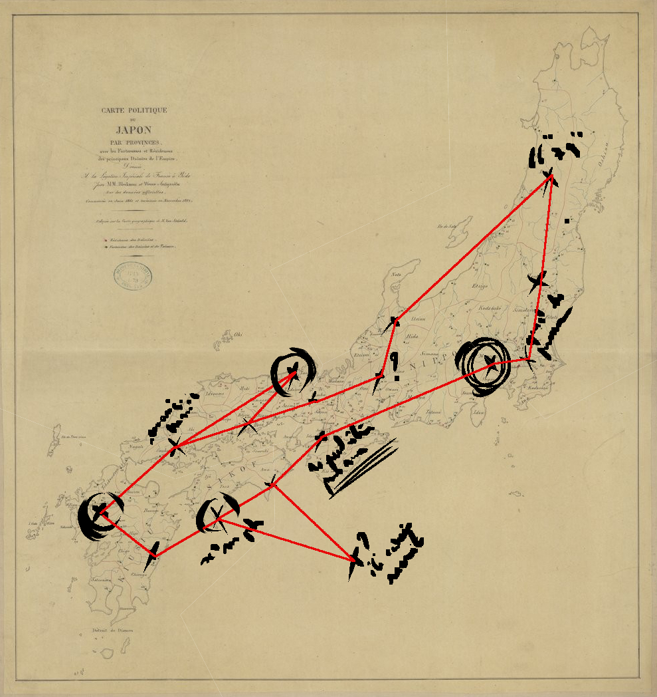

VOICI DONC LES QUATRE DESTINATIONS CLÉ À EXPLORER POUR RETROUVER LA PR
Les plaines de Sakura : Exposées aux pleins rayons lunaires elles constituent un habitat idéal pour l'hanagyo.
La vallée d'Ima : Il est dit que c'est le seul lieu à offrir une terre de qualité nécessaire pour la condition délicate des orchidae piscillus.

Les marais de Shempu : Avec les gaz qui émergent de ces eaux l'hanagyo peut flotter librement sans se soucier de perdre sa bulle.
Le lac de Kimisu : Proche du village du même nom, il abriterait des champs d'hanagyo sur ses berges. En tout cas, c'est ce que mentionnent les témoignagnes de certains habitants...
Crédits : Musique : "Soldiers of the Long March" (1990) by Guo Brothers - Carte ancienne du japon : BnF Gallica